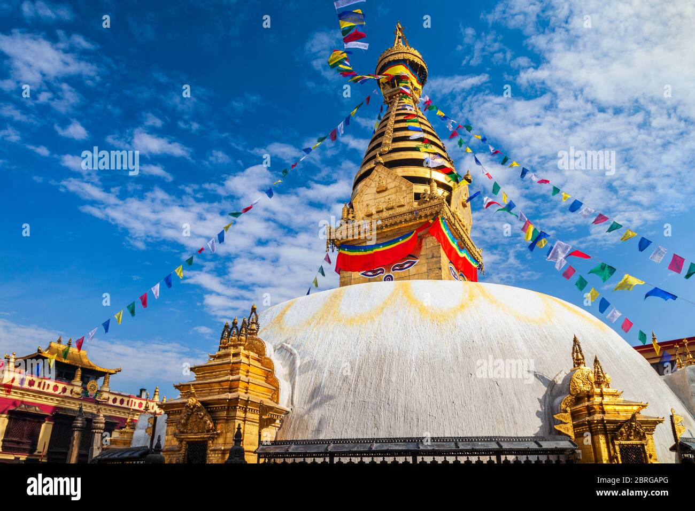

Swayambhu:
Swayambhu (Devanagari: स्वयम्भू स्तूप; Newar: स्वयंभू; sometimes Swayambu or Swoyambhu) is an ancient religious complex atop a hill in the Kathmandu Valley, west of Kathmandu city. The Tibetan name for the site means 'Sublime Trees' (Wylie: Phags.pa Shing.kun), for the many varieties of trees found on the hill. However, Shing.kun may be of the local Nepal Bhasa name for the complex, Swayambhu, meaning 'self-sprung'.[1] For the Buddhist Newars, in whose mythological history and origin myth as well as day-to-day religious practice Swayambhunath occupies a central position, it is probably the most sacred among Buddhist pilgrimage sites. For Tibetans and followers of Tibetan Buddhism, it is second only to Boudha. Swayambhunath is the Hindu name. The complex consists of a stupa, a variety of shrines and temples, some dating back to the Licchavi period. A Tibetan monastery, museum and library are more recent additions. The stupa has Buddha's eyes and eyebrows painted on. Between them, the number one (in Devanagari script) is painted in the fashion of a nose. There are also shops, restaurants and hostels. The site has two access points: a long staircase leading directly to the main platform of the temple, which is from the top of the hill to the east; and a car road around the hill from the south leading to the south-west entrance. The first sight on reaching the top of the stairway is the Vajra. Tsultrim Allione describes the experience:
Pashupatinath:

This temple was classified as a World Heritage Site in 1979. This "extensive Hindu temple precinct" is a "sprawling collection of temples, ashrams, images and inscriptions raised over the centuries along the banks of the sacred Bagmati river", and is one of seven monument groups in UNESCO's designation of Kathmandu Valley.[1] The temple is one of the Paadal Petra Sthalams on the continent. The exact date of the temple's construction is uncertain, but the current form of the temple was constructed in 1692 CE.[2] Over time, many more temples have been erected around the two-storied temple, including the Vaishnava temple complex with a Rama temple from the 14th century and the Guhyeshwari Temple mentioned in an 11th-century manuscript. Pashupatinath Temple is the oldest Hindu temple in Kathmandu. It is not known for certain when Pashupatinath Temple was built. But according to Nepal Mahatmaya and Himvatkhanda,[3] the deity here gained great fame there as Pashupati. Pashupatinath Temple's existence is recorded as early as 400 CE.[4] The ornamented pagoda houses the linga of Shiva. There are many legends describing how the temple of Aalok Pashupatinath came into existence here. One legend says that Shiva and Parvati took the form of antelopes in the forest on the Bagmati river's east bank. The gods later caught up with him and grabbed him by one of his horns, forcing him to resume his divine form. The broken horn was worshipped as a linga, but over time it was buried and lost. Centuries later a herdsman found one of his cows showering the earth with milk, and after digging at the site, he discovered the divine linga of Pashupatinath.
Boudha:
Bouddha (Nepali: बौद्धनाथ; Newar: खास्ति चैत्य; Standard Tibetan: བྱ་རུང་ཁ་ཤོར།, romanized: Jarung Khashor, Wylie: bya rung kha shor), also known as Boudhanath, Khasti Chaitya and Khāsa Chaitya is a stupa in Kathmandu, Nepal.[2] Located about 11 km (6.8 mi) from the center and northeastern outskirts of Kathmandu, its massive mandala makes it one of the largest spherical stupas in Nepal[3] and the world. The influx of large populations of refugees from Tibet has seen the construction of over 50 gompas (Tibetan monastery) around Boudha. As of 1979, Boudha Stupa is a UNESCO World Heritage Site. Along with Swayambhu, it is one of the most popular tourist sites in the Kathmandu area. The stupa is on the ancient trade route from Tibet which enters the Kathmandu Valley by the village of Sankhu in the northeast corner and continues to the ancient and smaller stupa of Chabahil named Charumati Stupa (often called "Little Boudhanath"). It then turns directly south, heading over the Bagmati River to Lalitpur, bypassing the main city of Kathmandu (which was built later).[2] Tibetan merchants have rested and offered prayers at Boudha Stupa for many centuries. When refugees entered Nepal from Tibet in the 1950s, many decided to live around Boudhanath. The stupa is said to entomb the remains of Kassapa Buddha.